閒暇時間
在閒暇時間會看看其他人的技術分享寫寫程式或玩遊戲，例如：
FGX
這個是在玩某款手遊做的，全部由C++編寫，開發環境是Windows，編譯由MinGW，因為語法越來越長，所以就用bat檔一個編譯程式
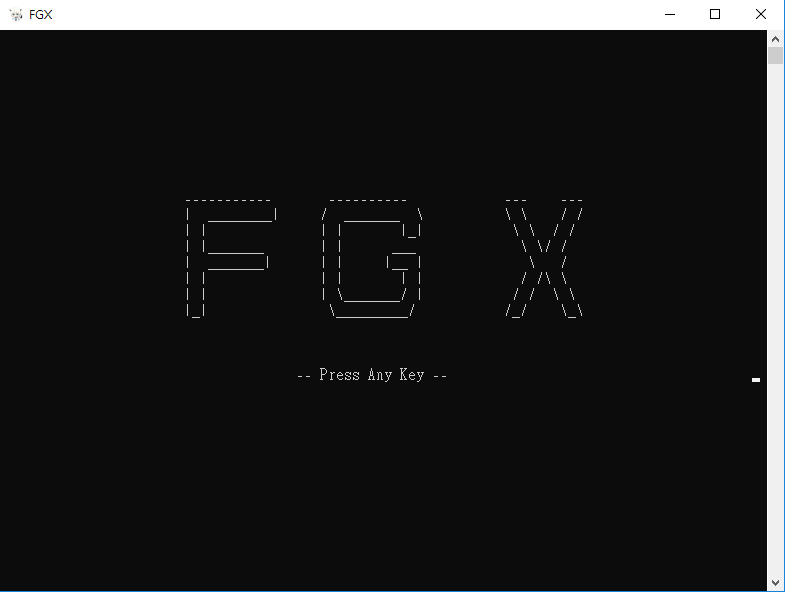 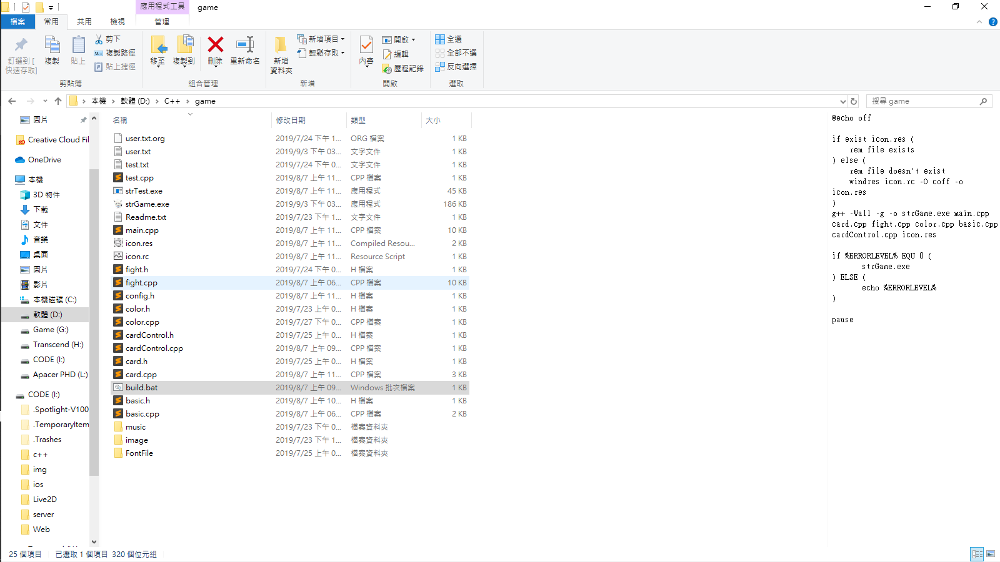
Python 基本圖片爬蟲
這個是在學校需要使用圖片做Data mining，所以才會寫個爬蟲做儲存
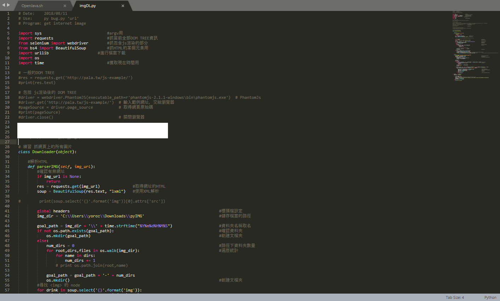一時寫code一時爽，一直寫code一直爽
我是黃俊維，畢業於國立臺中科技大學資訊工程系，在高中時初次接觸到的程式是VB6.0，雖然當時是很簡單的程式碼，出來的也是九九乘法之類的邏輯，但是意外的迷上了程式，之後上大學後碰到Web後就更加喜歡了，在課堂中也因為如此所以對於程式設計方面也比其他人了解的快，也時常和同學或學長們互相討論與研究
因為想要知道外面的高度，因此跟在老師身邊寫了幾個app(IOS)，其中有swift寫的"保母app"、"前鏡頭錄製程式"以及將學長寫好的腦波機app由Objc重構成swift等等，在objc部份則是維護app以及上傳影片而已了
四年級在系辦工讀，因此了解使用Linux與系統(apache、ssh、派送...)層面的知識以及維護系網的部分
因為想要知道外面的高度，因此跟在老師身邊寫了幾個app(IOS)，其中有swift寫的"保母app"、"前鏡頭錄製程式"以及將學長寫好的腦波機app由Objc重構成swift等等，在objc部份則是維護app以及上傳影片而已了
加油站app (作業用未上架)
此 app 透過網路上的開放平台抓取 xml 資料來顯示油價與加油站地點，並且點擊其中地點可以繪製路徑來顯示，全使用原生套件
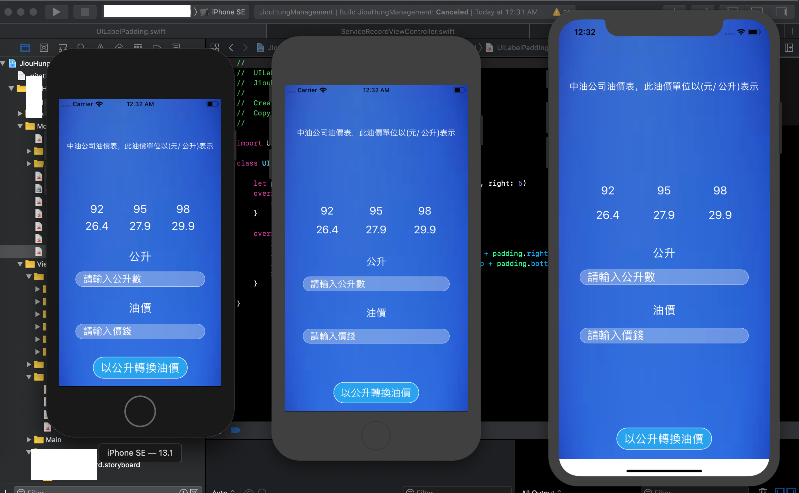 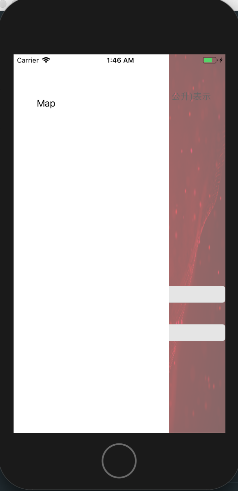 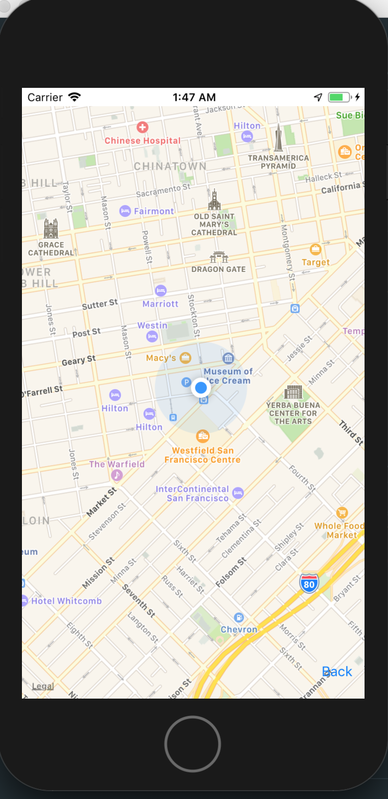 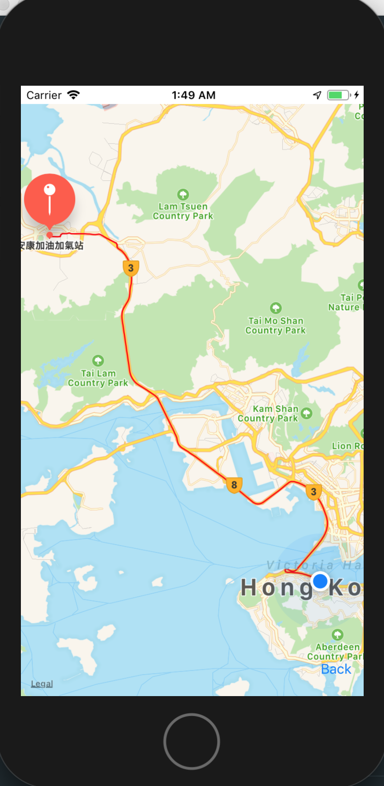app錄製程式 (在上傳至後台部分)
此 app 將使用者點擊過的地方與前鏡頭的畫面都錄製成影片，並透過網路上傳至後台
這個網站主要是解決舊網站無法顯示新班級，且課程使用爬蟲(shell)方式，解決以前一個一個儲存的方式，在後台有產出Odt檔案，解決以前文件手打的時間，之後當有人借用時會使用Line bot去提醒管理者們有新的借用紀錄
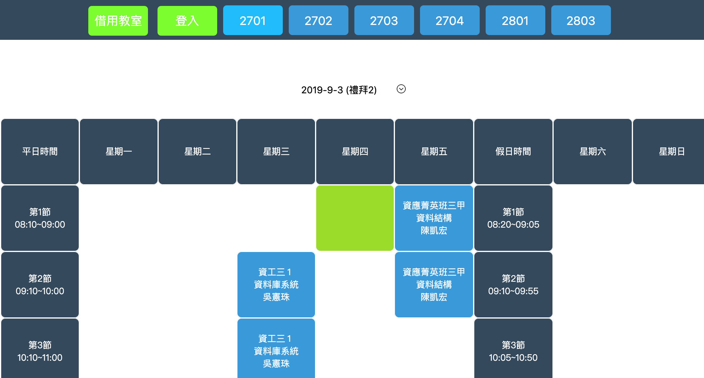 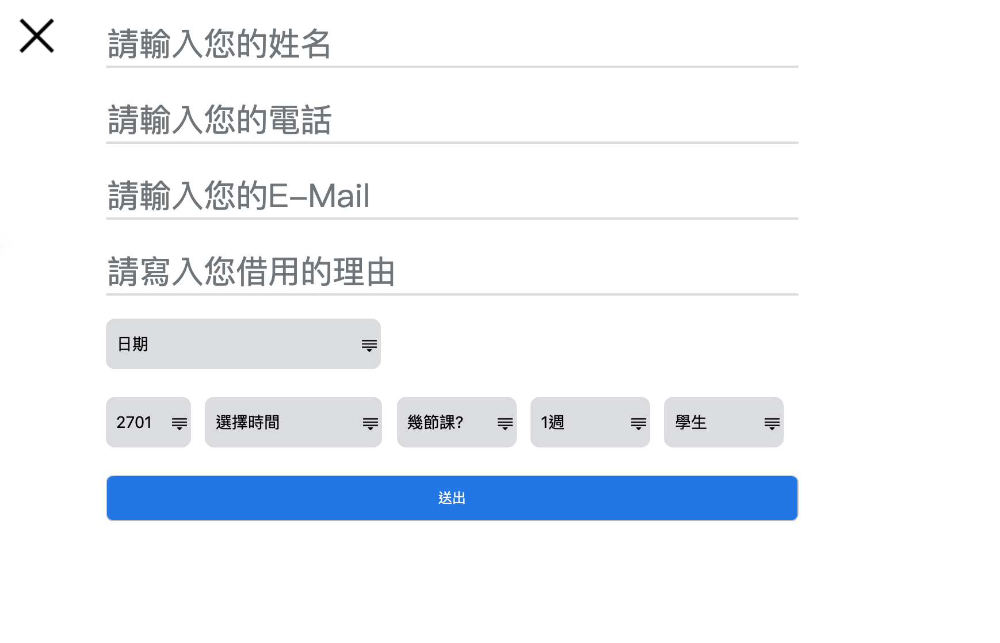 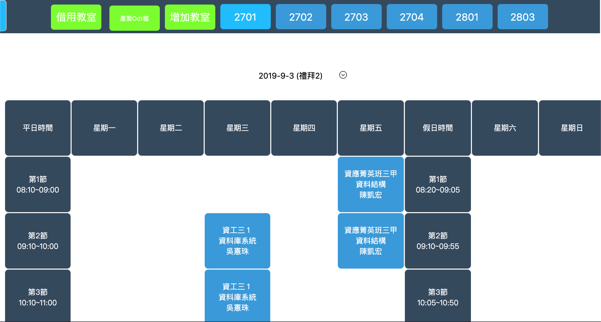 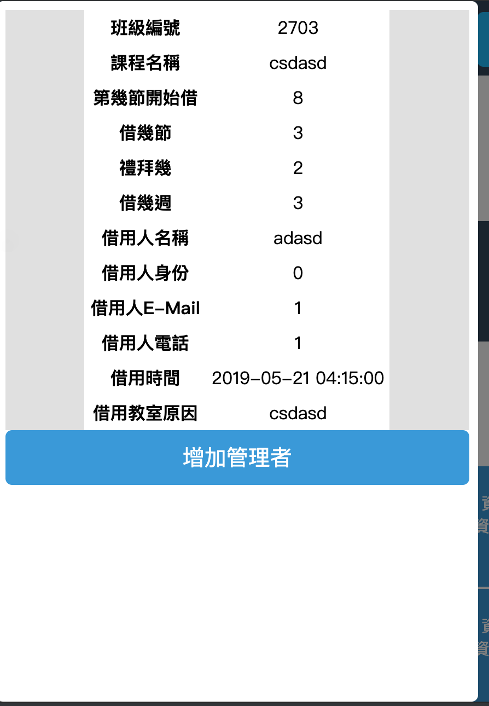在閒暇時間會看看其他人的技術分享寫寫程式或玩遊戲，例如：
這個是在玩某款手遊做的，全部由C++編寫，開發環境是Windows，編譯由MinGW，因為語法越來越長，所以就用bat檔一個編譯程式
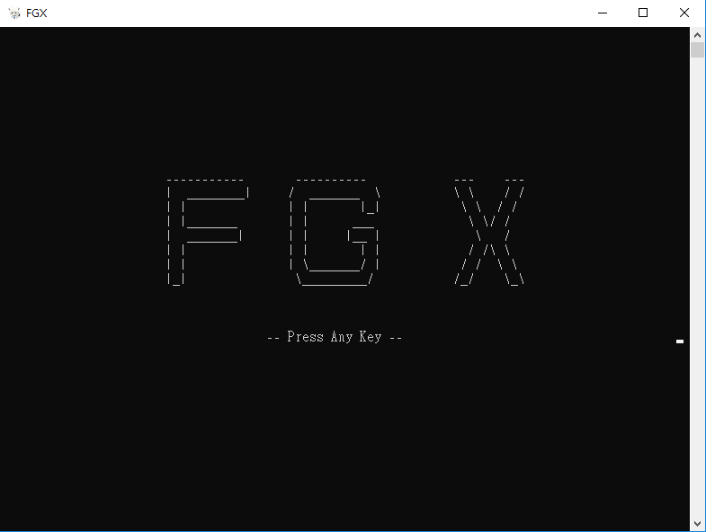 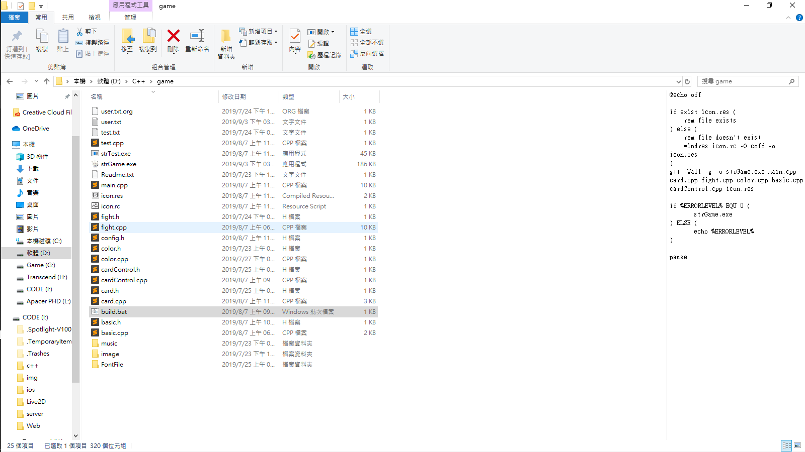
這個是在學校需要使用圖片做Data mining，所以才會寫個爬蟲做儲存
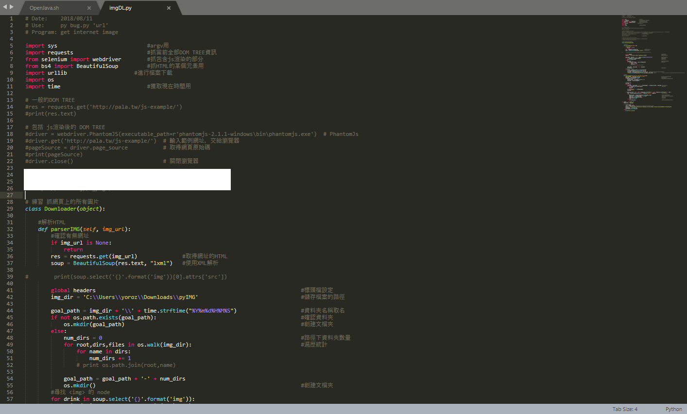